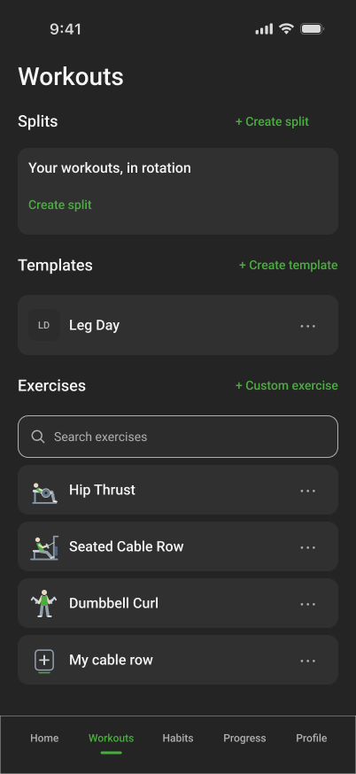
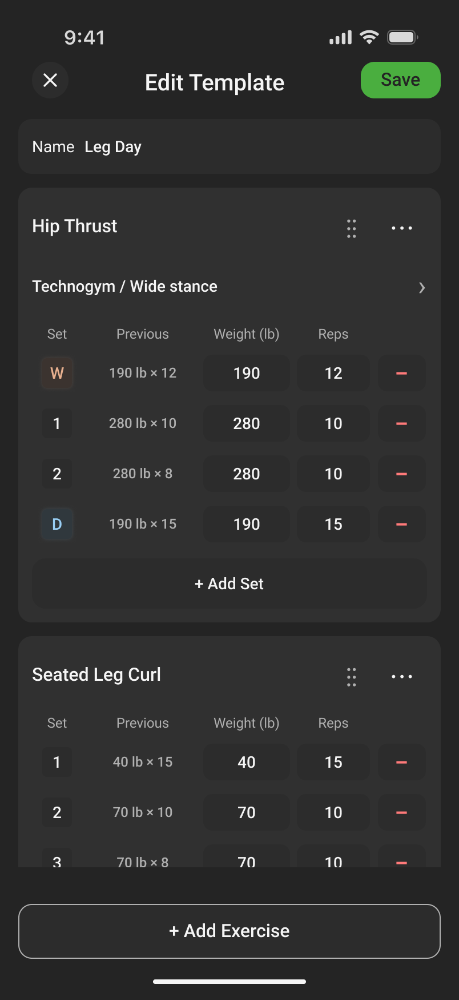
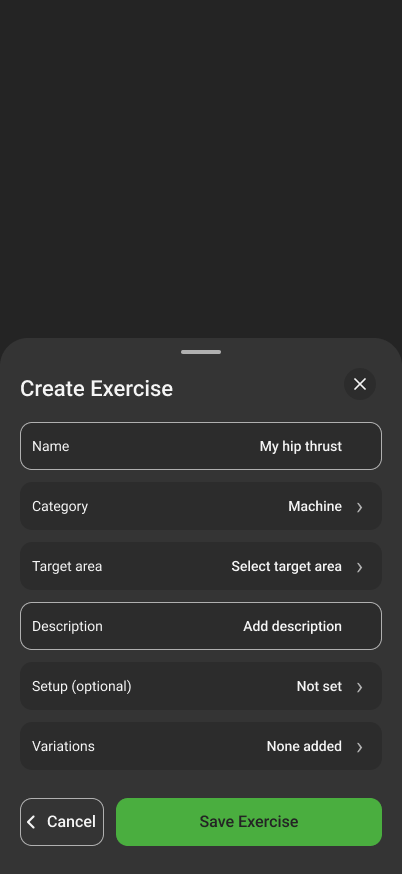
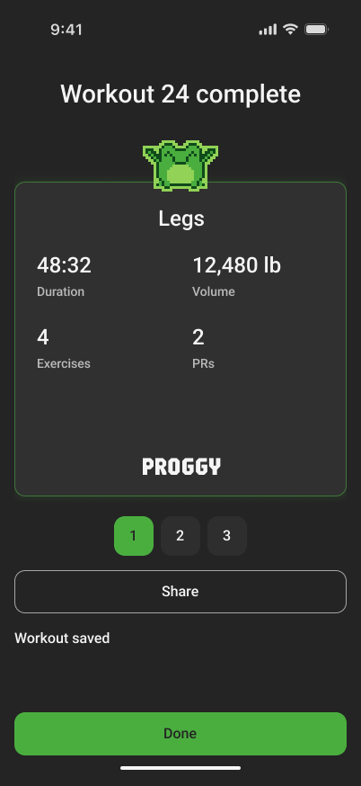
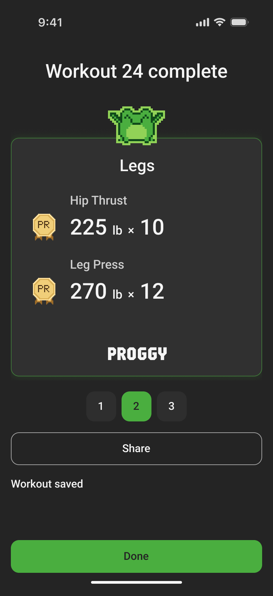

Fitness app / Product design
Proggy
Planning and tracking a workout.
A lifting-first app for planning training, logging sets, and understanding progress—with supporting habits alongside it.
Explore the design

The starting point
Workout tracking can involve more than recording a number: choosing a routine, remembering a machine setup, and knowing what happened last time. Proggy brings those pieces into one training flow, designed around intermediate lifters.
This is a product hypothesis being explored through design. Usability testing and real-world outcomes are still ahead.
01 / Make the structure understandable
Exercises, templates and splits
I separated reusable exercise definitions from the sets planned in a template. A split then puts templates into a rotation. Keeping those layers distinct lets someone change a workout without redefining the exercise underneath it.
The training model
- ExerciseWhat you liftHip Thrust
- TemplateHow you plan a sessionLeg Day
- SplitWhat comes nextAn ordered rotation of templates
A split is optional. Rest days don’t move it forward; completing its workout does.




02 / Keep detail out of the way
Optional machine setup
Machine setup is useful when it changes the meaning of a lift. It shouldn’t be a prerequisite for logging one. I made setup optional, kept variations separate, and brought the chosen details together in a compact row during a workout.
Name, category, and target area define the exercise. Machine setup and variations stay optional, so numeric weight and reps can be logged without a machine profile.
The current form explicitly labels setup as optional.


During the workout
Logging an active workout
- Previous performance stays beside the entry.
Weight, reps, and the last recorded set share one scan line.
- Setup stays in context.
A single row shows the chosen machine and variation. Changing it preserves completed sets as they were recorded.
- Completion is explicit.
Checked sets distinguish finished work from the plan. The rest control stays near the workout header.
03 / Give the session a clear ending
Reviewing a completed workout
Completion moves from detailed logging to a focused summary, personal records, and an exercise recap. The frog gives the moment warmth, while the record card puts the actual lift and result first. The numbers shown here are illustrative design content.


One card for the overview.
Another for the lifts worth remembering.

